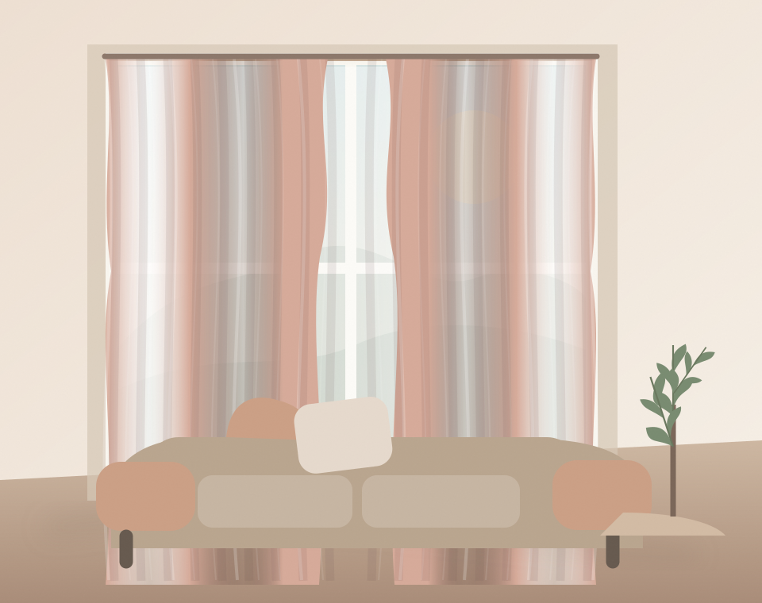
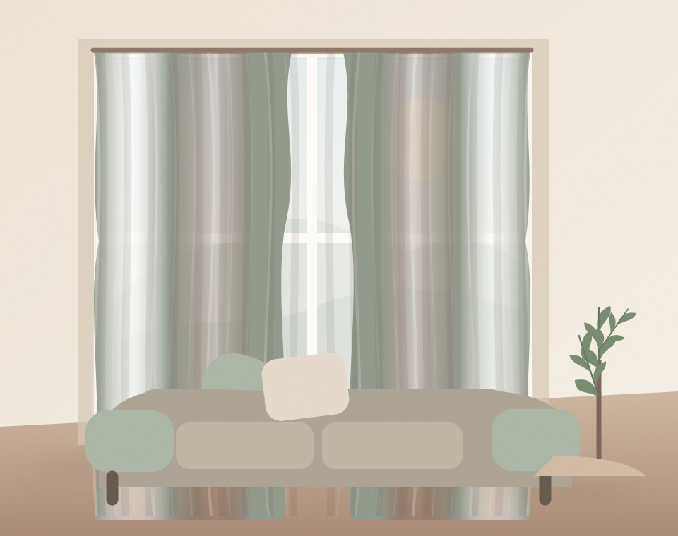

Текстиль, в котором живёт ваш дом.
Бархатные портьеры, лёгкий тюль, комплекты и пошив по вашей высоте. Выбирайте настроение для окна, а за деталями и расчётом обращайтесь к Альбине.
Заказы онлайн — по описанию салона с 2015 года

Коллекции с характером
В подборке — реальные опубликованные предложения салона и образцы тканей. Цена в карточке указана на дату публикации; текущие условия уточняются.
Весь каталогВизуализации — авторские иллюстрации для демонстрации дизайна. Они не являются фотографиями конкретных изделий.
Окна бывают разными. И решения тоже.

Красиво — это когда всё по размеру.
Укажите ширину карниза, высоту, ткань и цвет. Сразу посмотрите эскиз будущего оформления и подготовьте обращение на индивидуальный пошив.
Стоимость рассчитывает специалист. Демоверсия не принимает оплату и не отправляет фотографии автоматически.
Перейти к подборуТкани, которые создают атмосферу
Выбирайте не просто цвет, а характер: бархатистый, мягкий, фактурный или воздушный.
Изучить материалыВсё начинается с ваших пожеланий.
Расскажите об окне
Комната, размеры, желаемый стиль. Можно приложить фото интерьера к обращению в VK.
Подберите ткани
Изучите примеры материалов и оттенков. Наличие и образцы согласуйте с салоном.
Уточните пошив
Альбина поможет согласовать комплектность, стоимость, срок и доставку.